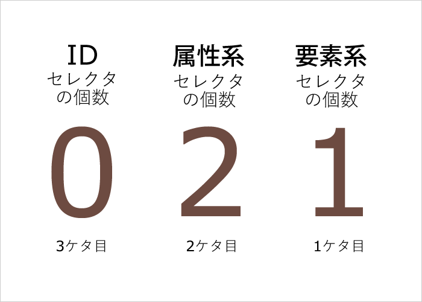
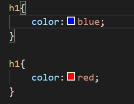
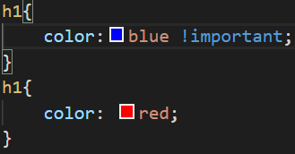

デザイン優先度
デザイン優先度とは
CSSはデザインを記述する言語です。 基本的に記述されている内容はブラウザ側が上から順に読み取り、情報を上書きしていきます。 記述方法により同じデザインを指定しても、優先度が違います。 今回は基本となる概念を理解していきます。
01デザイン優先度とは何なのか
「デザイン指定が重複したとき，どのデザインを優先するか」の 優先度を定量評価したものになります 詳細度が高い順に並べるとid>クラス>何もないセレクタとなります。 <p>テスト</p>をhtmlで記述された部分があるとします。 この部分の色を指定したい場合、p{ color:red;}のように記述します。 ただ例えばこの後にp{ color:blue;}と記述されていた場合どうなるでしょうか。 実は後に記述した青色が優先されます。 上から情報が上書きされるという考え方から皆さんも納得するされると思います。 ほかにも、記述の方法で優先度が変わります。 基本的に、詳細度(限定度)が高い指定方ほど、優先度が高いと考えてください。 ここで役立つ詳細度の点数方法があるので紹介します。  上記の様に3桁の数字で、それぞれのスタイル指定に含まれている個数をカウントすることによって、 詳細度がどのくらい高いのか、確認することができます。 具体例を示すと、このようになります。 •body section#tile p → 詳細度：103 •div#main-tile → 詳細度：101 •h1 → 詳細度：001 •.content .inner → 詳細度：020 •* → 詳細度：000 詳しくは次のページで説明しますが、CSSで場所を指定する際 IDは#id名{}, クラス名は.クラス名{}、要素名は要素名{}と記述する
02例外的にデザインを優先させる
上記で説明した部分は基本的な考え方になりますが、例外があります。 それがimportantです <h1>あいうえお<h1>という記述に図1と図2のcssを適用した場合とその結果 図1 !importantの記述がないので下のredが優先される 図2 !importantがついているのでblueが優先される 
.png)

戻る 次へ03使用上の注意点
Importantという機能は使用をできるだけ控えたほうが良いです。 何故なら、多くの場所に最優先指定がされていたら、 一体なにが本当に優先すべきプロパティなのか、わけがわからなくなってしまいます。 コードを記述する上で、可読性や補完性は高いほど好ましい。 誰が見ても分かりやすい記述であればある程、何か問題発生した時に解決が早くなる。